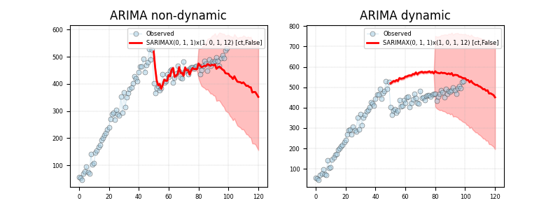

Note
Click here to download the full example code
Using SARIMAX (seasonal)
Out:
Series:
sarimax-aic 762.3859
sarimax-bic 776.6026
sarimax-hqic 768.0815
sarimax-llf -375.1929
sarimax-intercept_coef 23.665
...
sarimax-seasonal_order (1, 0, 1, 12)
sarimax-order (0, 1, 1)
sarimax-disp 0
sarimax-model <statsmode...
sarimax-id SARIMAX(0,...
Length: 73, dtype: object
Summary:
SARIMAX Results
==========================================================================================
Dep. Variable: y No. Observations: 80
Model: SARIMAX(0, 1, 1)x(1, 0, 1, 12) Log Likelihood -375.193
Date: Mon, 12 Jun 2023 AIC 762.386
Time: 16:00:37 BIC 776.603
Sample: 0 HQIC 768.082
- 80
Covariance Type: opg
==============================================================================
coef std err z P>|z| [0.025 0.975]
------------------------------------------------------------------------------
intercept 23.6650 14.984 1.579 0.114 -5.702 53.032
drift -0.2800 0.252 -1.112 0.266 -0.774 0.214
ma.L1 -0.4328 0.072 -6.052 0.000 -0.573 -0.293
ar.S.L12 -0.9988 0.795 -1.257 0.209 -2.557 0.559
ma.S.L12 0.9845 5.367 0.183 0.854 -9.535 11.504
sigma2 729.0077 3309.852 0.220 0.826 -5758.183 7216.199
==============================================================================
Ljung-Box(L1)(Q): 0.03 Jarque-Bera (JB): 60.42
Prob(Q): 0.87 Prob(JB): 0.00
Heteroskedasticity(H): 1.39 Skew: -1.14
Prob(H)(two-sided): 0.41 Kurtosis: 6.62
==============================================================================
Manual
------------------------------------------------------------------------------
Omnibus: 0.000 Durbin-Watson: 2.026
Normal (N): 25.443 Prob(N): 0.000
==============================================================================
Note that JB, P(JB), skew and kurtosis have different values.
Note that Prob(Q) tests no correlation of residuals.
6 # Import.
7 import sys
8 import warnings
9 import pandas as pd
10 import matplotlib as mpl
11 import matplotlib.pyplot as plt
12
13 # Import sarimax
14 from statsmodels.tsa.statespace.sarimax import SARIMAX
15
16 # import weights.
17 from pyamr.datasets.load import make_timeseries
18 from pyamr.core.regression.sarimax import SARIMAXWrapper
19
20 # Filter warnings
21 warnings.simplefilter(action='ignore', category=FutureWarning)
22
23 # ----------------------------
24 # set basic configuration
25 # ----------------------------
26 # Matplotlib options
27 mpl.rc('legend', fontsize=6)
28 mpl.rc('xtick', labelsize=6)
29 mpl.rc('ytick', labelsize=6)
30
31 # Set pandas configuration.
32 pd.set_option('display.max_colwidth', 14)
33 pd.set_option('display.width', 150)
34 pd.set_option('display.precision', 4)
35
36 # ----------------------------
37 # create data
38 # ----------------------------
39 # Create timeseries data
40 x, y, f = make_timeseries()
41
42 # Create exogenous variable
43 exog = x
44
45 # ----------------------------
46 # fit the model
47 # ----------------------------
48 # Create specific sarimax model.
49 sarimax = SARIMAXWrapper(estimator=SARIMAX) \
50 .fit(endog=y[:80], exog=None, trend='ct',
51 seasonal_order=(1, 0, 1, 12), order=(0, 1, 1),
52 disp=0)
53
54 # Print series
55 print("\nSeries:")
56 print(sarimax.as_series())
57
58 # Print summary.
59 print("\nSummary:")
60 print(sarimax.as_summary())
61
62 # -----------------
63 # Save & Load
64 # -----------------
65 # File location
66 # fname = '../../examples/saved/arima-sample.pickle'
67
68 # Save
69 # arima.save(fname=fname)
70
71 # Load
72 # arima = ARIMAWrapper().load(fname=fname)
73
74
75 # -----------------
76 # Predict and plot
77 # -----------------
78 # This example shows how to make predictions using the wrapper which has
79 # been previously fitted. It also demonstrateds how to plot the resulting
80 # data for visualization purposes. It shows two different types of
81 # predictions:
82 # - dynamic predictions in which the prediction is done based on the
83 # previously predicted values. Note that for the case of ARIMA(0,1,1)
84 # it returns a line.
85 # - not dynamic in which the prediction is done based on the real
86 # values of the time series, no matter what the prediction was for
87 # those values.
88
89 # Variables.
90 s, e = 50, 120
91
92 # Compute predictions
93 preds_1 = sarimax.get_prediction(start=s, end=e, dynamic=False)
94 preds_2 = sarimax.get_prediction(start=s, end=e, dynamic=True)
95
96 # Create figure
97 fig, axes = plt.subplots(1, 2, figsize=(8, 3))
98
99 # ----------------
100 # Plot non-dynamic
101 # ----------------
102 # Plot truth values.
103 axes[0].plot(y, color='#A6CEE3', alpha=0.5, marker='o',
104 markeredgecolor='k', markeredgewidth=0.5,
105 markersize=5, linewidth=0.75, label='Observed')
106
107 # Plot forecasted values.
108 axes[0].plot(preds_1[0, :], preds_1[1, :], color='#FF0000', alpha=1.00,
109 linewidth=2.0, label=sarimax._identifier())
110
111 # Plot the confidence intervals.
112 axes[0].fill_between(preds_1[0, :], preds_1[2, :],
113 preds_1[3, :],
114 color='#FF0000',
115 alpha=0.25)
116
117 # ------------
118 # Plot dynamic
119 # ------------
120 # Plot truth values.
121 axes[1].plot(y, color='#A6CEE3', alpha=0.5, marker='o',
122 markeredgecolor='k', markeredgewidth=0.5,
123 markersize=5, linewidth=0.75, label='Observed')
124
125 # Plot forecasted values.
126 axes[1].plot(preds_2[0, :], preds_2[1, :], color='#FF0000', alpha=1.00,
127 linewidth=2.0, label=sarimax._identifier())
128
129 # Plot the confidence intervals.
130 axes[1].fill_between(preds_2[0, :], preds_2[2, :],
131 preds_2[3, :],
132 color='#FF0000',
133 alpha=0.25)
134
135 # Configure axes
136 axes[0].set_title("ARIMA non-dynamic")
137 axes[1].set_title("ARIMA dynamic")
138
139 # Format axes
140 axes[0].grid(True, linestyle='--', linewidth=0.25)
141 axes[1].grid(True, linestyle='--', linewidth=0.25)
142
143 # Legend
144 axes[0].legend()
145 axes[1].legend()
146
147 # Show
148 plt.show()
Total running time of the script: ( 0 minutes 0.548 seconds)